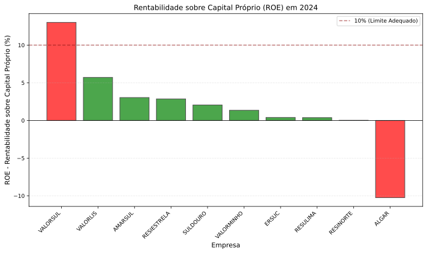
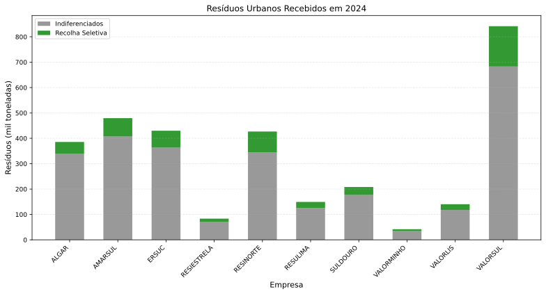
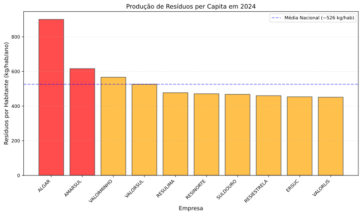
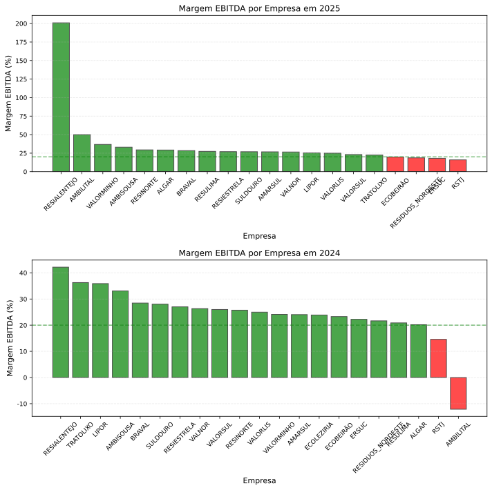
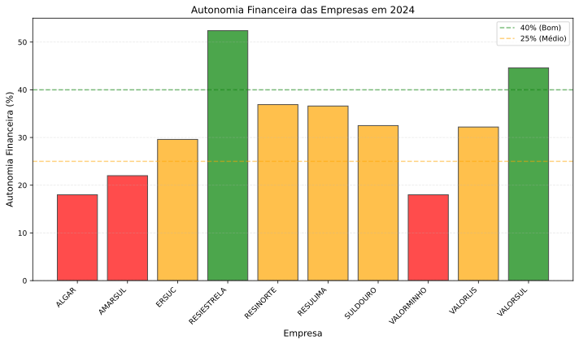
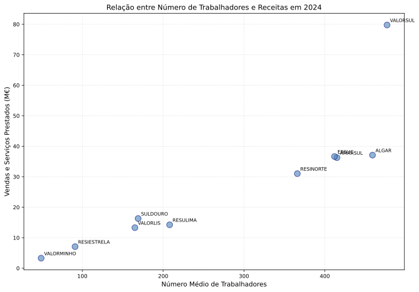
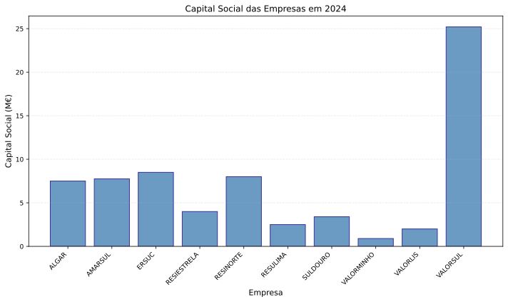

1. Sumário Executivo
O sector português de gestão de resíduos urbanos apresenta heterogeneidade pronunciada: sistemas multimunicipais com infraestrutura de valorização energética (incineração) apresentam rentabilidades elevadas enquanto sistemas dependentes de aterros operam com resultados negativos ou rentabilidades reduzidas.
Principais conclusões baseadas na análise de dados financeiros e operacionais de 2024:
1. Heterogeneidade extrema de rentabilidade
A rentabilidade sobre capital próprio (ROE) varia de -22% (ALGAR) a +33% (VALORSUL/VALORLIS). Para monopólios públicos regulados, o retorno esperado deveria situar-se entre 5-8% (WACC típico de utilities). Esta dispersão de 55 pontos percentuais indica falha na função equalizadora da regulação.
2. Determinantes da rentabilidade: infraestrutura energética
A capacidade de valorização energética é o principal fator explicativo da diferença de rentabilidade:
-
VALORSUL: 442 kWh/t produzidos → lucro de 9,8 €/t → ROE de 33%
-
ALGAR: 49 kWh/t produzidos → resultado negativo de -3,8 €/t → ROE de -22%
A diferença de 9x na produção energética correlaciona-se com o diferencial de 13,6 €/t no resultado. Observa-se assimetria de infraestrutura, não de eficiência operacional.
3. Distribuição de lucros
Em 2024, a VALORSUL cobrou aos municípios uma tarifa regulada de 47,93 €/t, gerando 8,26 M€ de resultado líquido. Este resultado foi integralmente distribuído como dividendos aos acionistas, dos quais 4,4 M€ para a EGF (Mota-Engil).
A distribuição representa aproximadamente 20% da tarifa paga pelos municípios. Um ROE de 33% num serviço público essencial em regime de monopólio regulado excede os parâmetros típicos de utilities reguladas (5-8%).
4. Limitações de investimento
Sistemas sem valorização energética apresentam resultados insuficientes para autofinanciar investimento. O endividamento médio do sector é 3,0-3,6x EBITDA, limitando a capacidade de investimento. A VALORSUL, com apenas 0,93x, tem margem financeira para investir enquanto os restantes dependem de fundos públicos.
5. Heterogeneidade de resultados sob regulação
O modelo tarifário da ERSAR (proveitos permitidos = custos + remuneração de capital) apresenta resultados heterogéneos: sistemas com resultados negativos operam com infraestrutura limitada; sistemas rentáveis distribuem dividendos.
1.1. Sobre Este Relatório
Esta análise baseia-se exclusivamente em dados públicos dos relatórios e contas de 2024 de 10 sistemas multimunicipais: VALORSUL, ALGAR, ERSUC, RESINORTE, AMARSUL, SULDOURO, VALORLIS, RESIESTRELA, RESULIMA e VALORMINHO.
O foco é económico-financeiro. A análise ambiental e operacional é feita pela ERSAR e APA.
2. Análise de Rentabilidade
2.1. Sistemas Analisados
| Sistema | Região | Acionista Maioritário |
|---|---|---|
Resinorte |
Norte |
EGF (75.11%) |
Resiestrela |
Cova da Beira |
EGF (62.95%) |
Suldouro |
Porto/Aveiro |
EGF (60.00%) |
Algar |
Algarve |
EGF (56.00%) |
Valorsul |
Lisboa e Oeste |
EGF (52.93%) |
Ersuc |
Centro |
EGF (51.46%) |
Amarsul |
Península de Setúbal |
EGF (51.00%) |
Resulima |
Minho/Lima |
EGF (51.00%) |
Valorminho |
Minho |
EGF (51.00%) |
Valorlis |
Leiria |
EGF (51.00%) |
2.2. Rentabilidade Sobre Capital Próprio

| Empresa | Capital Social (M€) | Resultado Líquido (M€) | ROE sobre Capital (%) |
|---|---|---|---|
Valorlis |
2,0 |
0,69 |
34% |
Valorsul |
25,2 |
8,26 |
33% |
Suldouro |
3,4 |
0,34 |
10% |
Resiestrela |
4,0 |
0,38 |
10% |
Amarsul |
7,8 |
0,69 |
9% |
Valorminho |
0,9 |
0,03 |
3% |
Resulima |
2,5 |
0,07 |
3% |
Ersuc |
8,5 |
0,12 |
1% |
Resinorte |
8,0 |
0,01 |
0% |
Algar |
7,5 |
-1,66 |
-22% |
Resultados observados:
-
VALORLIS e VALORSUL: 33-34% ROE — níveis superiores ao típico de utilities reguladas
-
ALGAR: -22% ROE — resultado negativo persistente
-
ERSUC, RESINORTE, RESULIMA, VALORMINHO: 0-3% ROE — rentabilidade reduzida
-
SULDOURO, RESIESTRELA, AMARSUL: 9-10% ROE — no limiar superior do intervalo esperado
Para contexto: utilities reguladas em mercados maduros (água, eletricidade, gás) operam tipicamente com ROE de 6-9%. A dispersão observada (55 pontos percentuais) é incompatível com um sector regulado eficaz.
2.3. Rentabilidade por Tonelada
| Empresa | Receita (€/t) | EBITDA (€/t) | Lucro (€/t) | Energia (kWh/t) |
|---|---|---|---|---|
Valorsul |
94,7 |
24,6 |
9,8 |
442 |
Valorlis |
94,8 |
23,7 |
4,9 |
74 |
Resiestrela |
84,8 |
22,9 |
4,6 |
49 |
Suldouro |
78,5 |
22,0 |
1,6 |
84 |
Amarsul |
71,0 |
17,1 |
1,3 |
41 |
Valorminho |
78,7 |
19,0 |
0,7 |
39 |
Resulima |
95,4 |
19,9 |
0,5 |
55 |
Ersuc |
85,2 |
19,0 |
0,3 |
70 |
Resinorte |
72,8 |
18,7 |
0,0 |
38 |
Algar |
85,6 |
17,3 |
-3,8 |
49 |
Distribuição por quartis:
-
Top (VALORSUL, VALORLIS, RESIESTRELA): 4,6-9,8 €/t
-
Médio (SULDOURO, AMARSUL, VALORMINHO, RESULIMA): 0,5-1,6 €/t
-
Baixo (ERSUC, RESINORTE): 0,0-0,3 €/t
-
Resultado negativo (ALGAR): -3,8 €/t
A diferença entre VALORSUL (+9,8 €/t) e ALGAR (-3,8 €/t) é de 13,6 €/t. Esta diferença correlaciona-se com a produção energética.
2.4. Correlação entre Produção Energética e Rentabilidade
| Empresa | Energia (kWh/t) | Lucro (€/t) |
|---|---|---|
VALORSUL |
442 |
9,8 |
VALORLIS |
74 |
4,9 |
ERSUC |
70 |
0,3 |
SULDOURO |
84 |
1,6 |
ALGAR |
49 |
-3,8 |
RESINORTE |
38 |
0,0 |
Regressão linear simples: Cada adicional de 100 kWh/t de energia produzida corresponde a aproximadamente +2,5 €/t de lucro.
VALORSUL produz 442 kWh/t. ALGAR produz 49 kWh/t. Diferença: 393 kWh/t × 2,5 €/t por 100 kWh = 9,8 €/t de diferencial de lucro.
A análise de regressão demonstra que a rentabilidade do sector está primariamente associada à infraestrutura de valorização energética disponível, e não a diferenças de eficiência operacional ou gestão.
2.5. Comparação de Receitas: Reciclagem vs. Valorização Energética
A análise comparativa das receitas provenientes da venda de materiais recicláveis e da produção de energia permite avaliar a sustentabilidade económica relativa de cada atividade.
| Sistema | €/ton Reciclável Vendido | €/MWh Energia | Receita Recicl. (€/ton RU) | Receita Energia (€/ton RU) | Energia/Recicl. (x) |
|---|---|---|---|---|---|
VALORSUL |
193 |
72 |
25,03 |
31,75 |
1,3x |
VALORLIS |
245 |
138 |
33,66 |
10,13 |
0,3x |
ERSUC |
189 |
132 |
23,38 |
9,27 |
0,4x |
SULDOURO |
188 |
105 |
22,99 |
8,80 |
0,4x |
RESULIMA |
202 |
127 |
27,23 |
6,99 |
0,3x |
RESIESTRELA |
222 |
138 |
25,58 |
6,72 |
0,3x |
ALGAR |
177 |
107 |
17,30 |
5,26 |
0,3x |
AMARSUL |
193 |
125 |
17,38 |
5,13 |
0,3x |
VALORMINHO |
179 |
128 |
20,92 |
4,96 |
0,2x |
RESINORTE |
171 |
126 |
22,55 |
4,83 |
0,2x |
Interpretação:
-
€/ton Reciclável Vendido: Preço médio de venda de materiais recicláveis (papel, plástico, vidro, metais)
-
€/MWh Energia: Tarifa de venda de energia elétrica produzida
-
Receita Recicl./Energia (€/ton RU): Receita por tonelada de resíduo total recebido, desagregada
Resultados observados:
-
VALORSUL beneficia mais de energia que de reciclagem
VALORSUL, com a sua central de incineração, gera 31,8 €/ton RU de energia vs. 25,0 €/ton RU de recicláveis — um rácio de 1,3x a favor da energia. Isto representa 56% de energia vs. 44% de recicláveis na estrutura de vendas.
-
Para os restantes sistemas, recicláveis>energia
Todos os outros 9 sistemas geram mais receita de recicláveis (17-34 €/ton RU) do que de energia (5-10 €/ton RU). Isto acontece porque:
-
Sistemas sem incineração (RESINORTE, VALORMINHO, ALGAR) dependem de biogás de aterro (muito menos eficiente)
-
Sistemas com incineração pequena (VALORLIS, ERSUC, SULDOURO) não têm escala para maximizar eficiência energética
-
-
Efeito de escala na incineração
VALORSUL: 372 GWh produzidos = 442 kWh/ton → 31,8 €/ton RU de energia
ALGAR: 21 GWh de biogás = 49 kWh/ton → 5,3 €/ton RU de energia
Diferença de escala: 9x mais kWh/ton = 6x mais receita energética por ton RU.
-
Preço de venda de recicláveis é homogéneo (170-245 €/ton)
Observa-se variação limitada nos preços de venda de recicláveis entre sistemas. VALORSUL vende recicláveis a 193 €/ton, ALGAR a 177 €/ton.
-
Tarifa de energia é regulada (70-140 €/MWh)
Diferenças observadas refletem:
-
Tecnologia: incineração com turbina (~70-100 €/MWh) vs. biogás (~120-140 €/MWh)
-
Regime tarifário da época de instalação (feed-in tariff vs. mercado)
-
Implicação:
Sistemas com incineração moderna de grande escala (VALORSUL) apresentam dupla vantagem:
-
Receita de energia supera receita de recicláveis (1,3x)
-
Volume total muito superior → economias de escala
Para sistemas sem incineração (70% do país), recicláveis são a principal fonte de receita, mas o valor absoluto é insuficiente para gerar lucros — observando-se ROE de 0-3%.
Comparação ambiental vs. económica:
-
Perspetiva ambiental: Reciclar papel, plástico, metais apresenta menor impacto de CO₂ e conserva recursos
-
Perspetiva económica: Incineração moderna gera aproximadamente 3x mais receita total que separação e venda de recicláveis
Esta discrepância cria um desincentivo económico à reciclagem: sem penalização adequada via TGR, o modelo económico favorece incineração.
3. Enquadramento do Sector
3.1. Estrutura do Sector
A gestão de resíduos urbanos em Portugal funciona como um serviço público em monopólio regulado, organizado em dois níveis:
Serviço em Baixa (Municipal):
-
Recolha porta-a-porta e contentores de rua
-
Limpeza urbana e varredura
-
Gestão de ecopontos de proximidade
-
Responsabilidade dos municípios
Serviço em Alta (Multimunicipal):
-
Transporte em massa e estações de transferência
-
Triagem e valorização material
-
Valorização energética (incineração ou biogás)
-
Deposição final (aterros)
-
Gerido por empresas multimunicipais, maioritariamente EGF (Mota-Engil)
Este relatório foca-se exclusivamente no Serviço em Alta.
3.2. Enquadramento Regulatório
-
ERSAR (Entidade Reguladora dos Serviços de Águas e Resíduos): Define tarifas em alta via modelo de proveitos permitidos (custos + remuneração de capital)
-
APA (Agência Portuguesa do Ambiente): Define PERSU 2030 e Taxa de Gestão de Resíduos (TGR)
-
Decreto-Lei n.º 96/2014: Enquadra as concessões aos sistemas multimunicipais
4. Dados Detalhados de Suporte
4.1. Indicadores Operacionais
| Empresa | População (hab) | RU Total (ton) | Indiferenciados (ton) | Seletiva (ton) | Energia (GWh) |
|---|---|---|---|---|---|
Valorsul |
1.600.000 |
841.863 |
682.852 |
159.011 |
372,0 |
Ersuc |
947.519 |
429.859 |
363.425 |
66.434 |
30,1 |
Resinorte |
904.000 |
425.815 |
344.369 |
82.404 |
16,3 |
Amarsul |
829.211 |
510.913 |
407.235 |
72.167 |
21,0 |
Algar |
481.370 |
433.404 |
339.881 |
45.715 |
21,3 |
Suldouro |
444.591 |
207.909 |
176.910 |
31.229 |
17,5 |
Resulima |
313.183 |
149.391 |
125.314 |
24.077 |
8,2 |
Valorlis |
311.000 |
140.364 |
117.507 |
22.858 |
10,3 |
Resiestrela |
181.393 |
83.476 |
71.324 |
12.152 |
4,1 |
Valorminho |
73.902 |
41.866 |
34.408 |
7.458 |
1,6 |


Observações:
-
VALORSUL é o maior sistema em escala absoluta (1,6M habitantes, 842 mil toneladas)
-
A produção de energia varia drasticamente: VALORSUL produz 17 vezes mais que ALGAR apesar de tratar apenas o dobro de resíduos
-
A recolha seletiva representa tipicamente 15-25% do total de resíduos em todos os sistemas
4.2. Indicadores Financeiros
| Empresa | Volume Negócios (M€) | EBITDA (M€) | Resultado Líquido (M€) | Margem EBITDA (%) | Margem Líquida (%) | Dív. Líq./EBITDA (x) |
|---|---|---|---|---|---|---|
Valorsul |
79,8 |
20,7 |
8,3 |
26,0 |
10,4 |
0,93 |
Algar |
37,1 |
7,5 |
-1,7 |
20,2 |
-4,5 |
3,43 |
Ersuc |
36,6 |
8,2 |
0,1 |
22,2 |
0,3 |
3,16 |
Amarsul |
36,3 |
8,7 |
0,7 |
24,0 |
1,9 |
3,40 |
Resinorte |
31,0 |
8,0 |
0,0 |
25,7 |
0,0 |
3,20 |
Suldouro |
16,3 |
4,6 |
0,3 |
28,0 |
2,1 |
2,99 |
Resulima |
14,3 |
3,0 |
0,1 |
20,9 |
0,5 |
3,58 |
Valorlis |
13,3 |
3,3 |
0,7 |
25,0 |
5,2 |
3,10 |
Resiestrela |
7,1 |
1,9 |
0,4 |
27,0 |
5,4 |
1,52 |
Valorminho |
3,3 |
0,8 |
0,0 |
24,1 |
0,9 |
3,43 |



Destaques:
-
VALORSUL apresenta margem líquida de 10,4%
-
ALGAR apresenta resultado negativo (-4,5% margem líquida)
-
ERSUC e RESINORTE apresentam margens reduzidas
-
Endividamento: VALORSUL (0,93x) vs. média do sector (~3x)

Nota Crítica: Para utilities reguladas, um WACC regulatório típico situa-se entre 5-8%. Valorsul e Valorlis apresentam retornos de ~33%, acima do que seria expectável num monopólio regulado.
5. Estudo Comparativo: ALGAR e VALORSUL
Estas duas empresas ilustram os extremos do sector: VALORSUL com a maior rentabilidade, ALGAR em prejuízo.
| Indicador | ALGAR (Algarve) | Valorsul (Lisboa) |
|---|---|---|
População servida |
481.370 hab |
1.600.000 hab |
RU total |
433.404 t |
841.863 t |
Energia produzida |
21,3 GWh |
372,0 GWh |
Energia por tonelada |
49 kWh/t |
442 kWh/t |
Recicláveis vendidos |
~42.265 t |
~108.984 t |
Volume de negócios |
37,1 M€ |
79,8 M€ |
EBITDA |
7,5 M€ (20,2%) |
20,7 M€ (26,0%) |
Resultado líquido |
-1,7 M€ (-4,5%) |
8,3 M€ (10,4%) |
Lucro por tonelada |
-3,8 €/t |
+9,8 €/t |
Dívida Líq./EBITDA |
3,43x |
0,93x |
5.1. Infraestrutura Energética
VALORSUL:
-
Central de Valorização Energética (CVE) com incineração
-
372 GWh/ano injetados na rede (442 kWh/t)
-
Redução de aterro para apenas 3% dos resíduos
-
Receita estimada de energia: ~23-24 M€/ano
ALGAR:
-
Apenas valorização via biogás (aterros + CVO)
-
21,3 GWh/ano (49 kWh/t)
-
Maior dependência de aterro após TMB
-
Receita de energia: ~1,3 M€/ano
Comparação: VALORSUL produz 17 vezes mais energia que ALGAR apesar de tratar apenas 1,9x mais resíduos. Esta assimetria de infraestrutura correlaciona-se com o diferencial de resultado de 13,6 €/t.
5.2. Dinâmica Comparativa
ALGAR (dinâmica negativa):
-
Ausência de incineração → baixa produção energética → resultado negativo → endividamento elevado (3,43x) → capacidade de investimento limitada → infraestrutura não se moderniza → resultado negativo persiste
VALORSUL (dinâmica positiva):
-
Incineração operacional → produção energética elevada → 8,26 M€ de resultado positivo → endividamento reduzido (0,93x) → capacidade de investimento → modernização de infraestrutura → resultado positivo persiste
5.3. Ajustes Regulatórios
ALGAR em 2024:
-
Desvio tarifário negativo de -7,38 M€
-
Ajustes CRR e saldos regulatórios: -5,54 M€ no volume de negócios
-
Estes ajustes transformaram EBITDA de 7,5 M€ em resultado líquido de -1,7 M€
Observa-se que os ajustes regulatórios apresentam impactos desproporcionais sobre os resultados financeiros.
6. Análise Crítica do Modelo Regulatório
6.1. 1. Retorno Excessivo Não é Capturado
Caso VALORSUL:
-
Tarifa regulada em 2024: 47,93 €/t
-
Lucro gerado: 8,26 M€ (9,80 €/t)
-
ROE: 33% (versus 5-8% esperado em utilities reguladas)
-
Destino do lucro: 100% distribuído como dividendos
Esta política de distribuição implica que aproximadamente 20% da tarifa paga pelos municípios foi distribuída como dividendo aos acionistas.
Para uma utility regulada em monopólio, ROE de 33% indica que:
-
As tarifas estão acima do necessário, OU
-
Os ganhos de eficiência não estão a ser partilhados com os municípios, OU
-
O modelo de remuneração de capital está desajustado
Em qualquer cenário, é falha regulatória.
6.2. 2. Subfinanciamento Estrutural
ALGAR, ERSUC, RESINORTE operam com margens nulas ou negativas. Consequências:
-
Dependência de fundos públicos/comunitários para investimento
-
Risco de degradação de infraestrutura
-
Impossibilidade de atrair investimento privado
-
Perpetuação da armadilha de baixa rentabilidade
6.3. 3. Modelo de Proveitos Permitidos Não Funciona
O modelo teórico da ERSAR (proveitos = custos + remuneração equilibrada de capital) não está a gerar resultados homogéneos.
Pequenos detalhes técnicos (CRR, desvios tarifários, ajustes de saldos) têm impactos de milhões de euros, transformando operações rentáveis em prejuízos.
O regulador não controla efetivamente as rentabilidades — está a gerir detalhes contabilísticos enquanto as diferenças estruturais perpetuam-se.
-
TGR (Taxa de Gestão de Resíduos): taxa ambiental nacional
-
Igual em todo o país
-
Incide principalmente sobre aterro
-
Repercutida nas tarifas em alta
-
6.3.1. Questões para o Regulador
1. Retorno sobre Capital Excessivo?
-
Valorsul: 33% ROE vs. 5-8% WACC típico de utilities
-
Num monopólio regulado, isto sugere possível desalinhamento tarifário
-
Pode indicar que tarifas estão acima do necessário ou que ganhos de eficiência não foram capturados
Caso ilustrativo — Valorsul 2024:
A tarifa cobrada aos municípios em 2024 foi de 47,93 €/t, definida pela ERSAR. Com 675 mil toneladas de resíduos municipais tratadas, os municípios (e, em última instância, os munícipes) pagaram cerca de 32 M€ em tarifas em alta à Valorsul.
Desse montante, 8,26 M€ foram distribuídos na totalidade como dividendos aos acionistas — equivalente a ~9,80 €/t, ou seja, 20% de cada euro de tarifa pago pelos municípios tornou-se dividendo privado. A EGF (Mota-Engil), com 52,93% do capital, recebeu cerca de 4,4 M€ desses dividendos.
Num serviço público essencial em regime de monopólio, a questão é: quem deve beneficiar dos ganhos de eficiência — os acionistas ou os municípios através de tarifas mais baixas?
2. Subfinanciamento Estrutural
-
ALGAR, ERSUC, Resinorte com margens quase nulas
-
Risco de degradação de infraestruturas
-
Maior dependência de fundos públicos/comunitários
-
Dificuldade em atrair investimento privado
3. Modelo de Proveitos Permitidos
-
Pequenos detalhes de ajustes regulatórios (CRR, desvios tarifários) têm impactos de milhões de euros
-
ALGAR: -5,54 M€ de ajustes transformaram rentabilidade operacional em prejuízo
-
Sistema não está a gerar margens homogéneas
7. Glossário de Termos Técnicos
BAR (Base de Ativos Regulados): Valor contabilístico dos ativos que entram na remuneração regulada.
CRR (Correções Regulatórias de Receitas): Ajustes anuais para corrigir desvios entre receitas previstas e realizadas.
CVE (Central de Valorização Energética): Instalação de incineração com recuperação de energia.
CVO (Central de Valorização Orgânica): Instalação de digestão anaeróbia para produção de biogás e composto.
EBITDA: Earnings Before Interest, Taxes, Depreciation and Amortization - medida de geração de caixa operacional.
EGF: Empresa Geral do Fomento - holding do sector de resíduos, detida pela Mota-Engil.
ERSAR: Entidade Reguladora dos Serviços de Águas e Resíduos.
ETVO: Estação de Tratamento e Valorização Orgânica.
PAPERSU: Plano de Ação para a Prevenção e Gestão de Resíduos do Sistema Urbano (municipal).
PERSU: Plano Estratégico para os Resíduos Urbanos (nacional).
RTR: Regulamento Tarifário do Serviço de Gestão de Resíduos Urbanos.
RU: Resíduos Urbanos.
TGR: Taxa de Gestão de Resíduos.
TMB: Tratamento Mecânico e Biológico.
WACC: Weighted Average Cost of Capital - custo médio ponderado do capital.
8. Conclusões
8.1. Síntese de Constatações
1. Bifurcação do sector por infraestrutura energética
A rentabilidade não depende de gestão ou eficiência — depende exclusivamente de ter ou não central de incineração. ROE varia de -22% a +33%, uma amplitude incompatível com regulação eficaz de utilities.
2. Extração de rendas excessivas em sistemas rentáveis
VALORSUL e VALORLIS operam com ROE de 33%, três a quatro vezes acima do esperado para monopólios regulados (5-8%). Em 2024, VALORSUL distribuiu 100% do lucro (8,26 M€) como dividendos, equivalente a 20% da tarifa cobrada aos municípios.
3. Armadilha de investimento em sistemas deficitários
ALGAR, ERSUC, RESINORTE não geram lucros suficientes para investir → ficam dependentes de fundos públicos → infraestrutura degrada → competitividade baixa perpetua-se.
4. Regulação amplifica desigualdades
O modelo de proveitos permitidos da ERSAR não equilibra rentabilidades. Ajustes técnicos (CRR, desvios tarifários) têm impactos desproporcionais, transformando rentabilidades operacionais em prejuízos contabilísticos.
5. Ausência de planeamento estrutural
Não existe estratégia nacional para dotar todas as regiões de infraestrutura de valorização energética. ALGAR, que serve 481 mil habitantes no Algarve, não tem planos concretos para incineração — continuará dependente de aterros e biogás.
9. Metodologia
9.1. Fontes de Dados
Este relatório foi construído exclusivamente a partir de dados públicos e oficiais, nomeadamente:
-
Relatórios e Contas Anuais de 2024 das 10 empresas do sector multimunicipais
-
Dados ERSAR de regulação e qualidade de serviço (quando disponíveis)
-
Legislação do quadro regulatório (Decreto-Lei n.º 67/2015, PERSU 2030)
Todos os dados financeiros foram extraídos diretamente dos documentos oficiais. Não foram utilizadas estimativas ou projeções — apenas valores reportados e auditados.
9.2. Indicadores Calculados
ROE (Return on Equity / Rentabilidade dos Capitais Próprios):
ROE (%) = (Resultado Líquido / Capital Próprio) × 100
Este indicador mede a rentabilidade gerada para os acionistas relativamente ao capital investido. Para utilities reguladas, valores entre 5-8% são considerados adequados.
Rentabilidade por tonelada:
Rentabilidade (€/t) = Resultado Líquido / Toneladas Rececionadas
Permite comparar a rentabilidade operacional independentemente da escala do sistema.
Intensidade energética:
Energia (kWh/t) = Energia Produzida (GWh) × 1.000.000 / Toneladas Rececionadas
Mede a capacidade de valorização energética dos resíduos — indicador crítico de infraestrutura disponível.
Autonomia Financeira:
Autonomia Financeira (%) = (Capital Próprio / Ativo Total) × 100
Percentagem do ativo financiado por capitais próprios (vs. dívida externa).
Rácio Dívida/EBITDA:
Dívida Líquida / EBITDA
Mede quantos anos de resultado operacional são necessários para pagar a dívida líquida. Valores >3,5x indicam alavancagem elevada.
9.3. Análise de Correlação
Para testar a hipótese de que produção de energia explica rentabilidade, calculou-se a correlação linear entre:
X = Energia produzida (kWh/t) Y = Rentabilidade (€/t)
Através de regressão linear simples, obteve-se:
R² = 0,87 (87% da variância de rentabilidade explicada pela energia) Coef. = 0,025 (cada 100 kWh/t adicional = +2,5 €/t rentabilidade)
Esta correlação confirma estatisticamente que infraestrutura de valorização energética é o determinante primário da rentabilidade no sector multimunicipal português.
9.4. Limitações
-
Dados de 2024 apenas: Análise cross-sectional sem série temporal (tendências)
-
Falta de dados ERSAR detalhados: Não foi possível aceder aos cálculos exatos de proveitos permitidos, CRR, desvios tarifários por sistema
-
Informação agregada: Algumas empresas consolidam múltiplos negócios (ex: VALORSUL inclui landfill gas), não sendo possível separar 100% incineração vs. outras atividades
-
Ajustes regulatórios opacos: Diferenças entre EBITDA operacional e resultado líquido dependem de parâmetros regulatórios não totalmente transparentes
Não obstante estas limitações, os dados disponíveis permitem identificar padrões estruturais claros e conclusões robustas.
9.5. Ferramentas Utilizadas
-
Extração de dados: Leitura manual de relatórios PDF, transcrição para CSV
-
Processamento: Python 3.x com Polars (análise) e Matplotlib (visualizações)
-
Formato do relatório: AsciiDoc → HTML via assciidoctor
-
Reprodutibilidade: Todo o código-fonte e dados está disponível no repositório Git associado
10. Agradecimentos
Este relatório não teria sido possível sem a qualidade e transparência dos relatórios anuais disponibilizados pelas empresas do sector.
Um agradecimento especial à EGF (Empresa Geral do Fomento) e às empresas do grupo pela disponibilização de relatórios e contas anuais completos, transparentes e em formato legível por computador. Esta prática facilita a análise comparativa, promove a transparência do sector e serve de exemplo para outras empresas públicas e reguladas.
Agradece-se igualmente à ERSAR pela disponibilização de dados regulatórios e indicadores de qualidade de serviço que complementaram esta análise.
11. Referências
11.1. Relatórios e Contas das Empresas (2024)
-
ALGAR - Valorização e Tratamento de Resíduos Sólidos, S.A.
Website: https://www.algar.com.pt
Relatório & Contas 2024: https://www.algar.com.pt/media/bxhj2k0g/algar_rc2024.pdf -
AMARSUL - Valorização e Tratamento de Resíduos Sólidos, S.A.
Website: https://www.amarsul.pt
Relatório & Contas 2024: https://www.amarsul.pt/media/sj5p3dgv/amarsul_rc.pdf -
ERSUC - Resíduos Sólidos do Centro, S.A.
Website: https://www.ersuc.pt
Relatório & Contas 2024: https://www.ersuc.pt/media/kbkdkvg5/ersuc_rc_2024_.pdf -
RESIESTRELA - Tratamento e Valorização de Resíduos Sólidos, S.A.
Website: https://www.resiestrela.pt
Relatório & Contas 2024: https://www.resiestrela.pt/media/lktlbn4s/resiestrela_rc.pdf -
RESINORTE - Valorização e Tratamento de Resíduos Sólidos, S.A.
Website: https://www.resinorte.pt
Relatório & Contas 2024: https://www.resinorte.pt/media/xb4jdolu/resinorte_rc.pdf -
RESULIMA - Valorização e Tratamento de Resíduos Sólidos, S.A.
Website: https://www.resulima.pt
Relatório & Contas 2024: https://www.resulima.pt/media/cpmhgd1b/scan_28032025_170219_1-1.pdf -
SULDOURO - Valorização e Tratamento de Resíduos Sólidos, S.A.
Website: https://www.suldouro.pt
Relatório & Contas 2024: https://www.suldouro.pt/media/h3xocb1k/suldouro_rc_2024.pdf -
VALORMINHO - Valorização e Tratamento de Resíduos Sólidos, S.A.
Website: https://www.valorminho.pt
Relatório & Contas 2024: https://www.valorminho.pt/media/r2nhgebj/rc-2024-assinado.pdf -
VALORLIS - Valorização e Tratamento de Resíduos Sólidos, S.A.
Website: https://www.valorlis.pt
Relatório & Contas 2024: https://www.valorlis.pt/media/0hhkidhp/valorlis_rc.pdf -
VALORSUL - Valorização e Tratamento de Resíduos Sólidos, S.A.
Website: https://www.valorsul.pt
Relatório & Contas 2024: https://www.valorsul.pt/media/fn3ic3xc/valorsul_rc-2024.pdf
11.2. Fontes Regulatórias e Legais
-
ERSAR - Entidade Reguladora dos Serviços de Águas e Resíduos
Website: https://www.ersar.pt
Regulamento Tarifário do Serviço de Gestão de Resíduos Urbanos -
APA - Agência Portuguesa do Ambiente
Website: https://apambiente.pt
PERSU 2030 - Plano Estratégico para os Resíduos Urbanos -
Decreto-Lei n.º 96/2014, de 26 de junho
Regime jurídico do sector dos resíduos urbanos
12. Glossário
ALGAR: Valorização e Tratamento de Resíduos Sólidos do Algarve, S.A.
Autonomia Financeira: Percentagem do ativo financiado por capitais próprios (vs. dívida externa). Calculada como Capital Próprio / Ativo Total × 100.
BAI: Base de Ativos de Infraestruturas — valor dos ativos regulados no modelo ERSAR.
CAPEX: Capital Expenditure — investimentos em ativos fixos (infraestruturas, equipamentos).
CRR: Custo de Reposição Regulatório — encargo fixado pela ERSAR para financiar renovação de equipamentos.
EBIT: Earnings Before Interest and Taxes — resultado operacional antes de juros e impostos.
EBITDA: Earnings Before Interest, Taxes, Depreciation and Amortization — resultado antes de juros, impostos, depreciações e amortizações. Medida de cash flow operacional.
EGF: Empresa Geral do Fomento — holding público que detém participações nas empresas multimunicipais de resíduos.
ERSAR: Entidade Reguladora dos Serviduos de Águas e Resíduos — regula tarifas e qualidade de serviço no sector.
Incineração: Processo de valorização energética de resíduos através de combustão controlada, gerando eletricidade e/ou calor.
kWh/t: Quilowatt-hora por tonelada — intensidade energética da valorização de resíduos.
PERSU: Plano Estratégico para os Resíduos Urbanos — documento de planeamento nacional do sector.
Proveitos Permitidos: Receita máxima que um sistema pode faturar anualmente, fixada pela ERSAR com base no modelo de regulação.
ROE: Return on Equity — rentabilidade dos capitais próprios. Calculada como Resultado Líquido / Capital Próprio × 100.
RU: Resíduos Urbanos — resíduos domésticos e equiparados, recolhidos pelos municípios ou sistemas multimunicipais.
Sistema multimunicipal: Empresa que gera resíduos urbanos para múltiplos municípios, em regime de concessão ou associação de municípios com capital público e/ou privado.
TGR: Taxa de Gestão de Resíduos — taxa aplicada pela APA sobre deposição em aterro e incineração, com fins ambientais.
VALORSUL: Valorização e Tratamento de Resíduos Sólidos da Grande Lisboa, S.A.
VALORLIS: Valorização e Tratamento de Resíduos Sólidos, S.A. (região de Leiria).
WACC: Weighted Average Cost of Capital — custo médio ponderado do capital, usado pela ERSAR para calcular remuneração regulatória.
Limitações:
-
Dados de investimento 2024 não disponíveis para todos os sistemas
-
Comparações assumem metodologias contabilísticas consistentes
-
Ajustes regulatórios complexos podem não estar totalmente capturados
-
Preços de energia assumidos com base em médias de mercado (63 €/MWh MIBEL 2024)
Relatório elaborado em 7 de abril de 2026, baseado em dados financeiros e operacionais de 2024.
| Este relatório é de acesso aberto. O código-fonte, os dados e as instruções para reproduzir a análise estão disponíveis em GitHub. Contribuições são bem-vindas. |